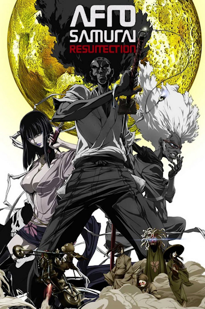

Air Date: January 4, 2007
Five Star Rating : ★★★★
Afro Samurai focuses on a samurai named Afro whose mission is to get the number 1 headband and avenge his father. The setting is somewhat feudal however some characters have androids and other futuristic technology. The show focuses on battles between the eponymous character and others who are seeking the headband.
#violent